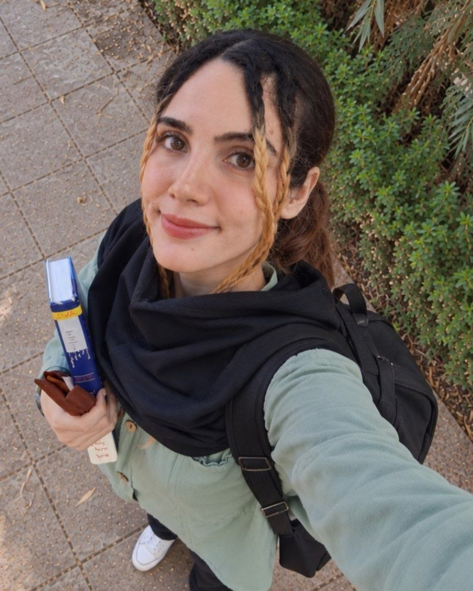

ساناریا / مهندسی و پژوهش
آریا + ساناز
پیوندی که در آن، خیال به سامانهای واقعی تبدیل میشود.
آریا سامانهها را معماری و مهندسی میکند. ساناز نیرویی است که این مسیر را روی زمین نگه داشته؛ پشتوانهای دهساله که به ایدههای دشوار فرصت داده است تا به کارهای واقعی و ماندگار تبدیل شوند.
هوش مصنوعی·سامانههای توزیعشده·محاسبات کوانتومی·روشهای صوری
۰۰ / نمای عمومی
از دادههای مخزن، با اندازهگیری.
فعالیت مخزنها، آثار منتشرشده و دستاوردهای مهندسی. زمان ثبت دادهها: ۲۰۲۶/۱۰/۱۳. درخواستهای تغییر، ادغامها و بازبینیها شامل مخزنهای خودمان و مشارکتهای ثبتشده در سازمانهای دیگرند؛ تعداد ثبتهای کد جمع شاخههای پیشفرض است و کد یکتا را نشان نمیدهد.
عددها از دفتر ثبت پروژهها بهدست آمدهاند. شمار ثبتهای کد فقط کارهای منتسب به آریا در شاخهٔ اصلی است؛ شمار مخزنهای عمومی و خصوصی، تعداد پایگاههای کد یکتا را نشان نمیدهد.
۰۱ / پروژههای برگزیده
برجستهترین کارها، پیش از همه.
چیدمان بر پایهٔ عمق فنی، شواهد قابل بررسی و ارتباط امروز هر پروژه است.
کد، روش و محدودیتها نیز آمدهاند.
۶ پروژه
برجسته / موتور اعتبارسنجیRCHAIN-COMPLIER
وقتی ادعا به شواهد نیاز دارد.
ادعاهای مربوط به اجرای سامانه را با شواهد امضاشده، بازیابی پایدار و راستیآزمایی قطعی، بهطور مستقل قابل بررسی میکند.
- تایپاسکریپت
- نود جیاس
- Ed25519
- ثبت تراکنشی اسکیواللایت
10/14 شاخص شواهد446 ثبت کد منتسب20 درخواست تغییر ادغامشده
موتور اعتبارسنجی / ساختار محلی۳ فرایند
ارسالگروظیفه و شواهد امضاشده
←
قیود اعتمادِ بازبینبازبین الف · بازبین بدو رسید امضاشده
←
بستهٔ شواهدبررسی و بازپخش
سیاست راستیآزمایی در اختیار بازبین میماند.
درون معماری مسئله / روش / تصمیمها
مسئله
خودِ نتیجه نمیگوید کدام وظیفه اجرا شده، تولیدکنندهٔ آن چه کسی بوده یا بازبین مستقل میتواند پس از راهاندازی دوباره ادعا را بازتولید کند یا نه.
روش
سه فرایند محلی، هویتها و دفترهای ثبت جداگانهٔ خود را پایدار نگه میدارند. وظیفه و شواهد امضاشده با دو رسید بازبین، بستهای مرجع میسازند که قابل بررسی و بازپخش است.
تصمیمها
قیود اعتمادِ بازبین مستقل از تولیدکننده میمانند. شواهد به عملیاتی مشخص پیوند میخورند. وضعیت در بازیابی حفظ میشود و دستکاری با آزمونهای اجرایی رد میشود.
دامنهٔ کنونی
عضویت ثابت، کد بازبینِ مورد اعتماد و ارتباط محلی. پاسشدن بررسی وابسته به وظیفه، اثبات ایمنی پروتکل یا ادعای نهاییشدن در شبکهٔ عملیاتی آرچین نیست.
Sovereign Lattice
اجماع به سبک تحمل خطای بیزانسی را با گواهیهای رمزنگاری، وضعیت پایدار و آثار صوریِ محدود به دامنهای مشخص بررسی میکند.
- راست
- BLS12-381
- لین ۴
- WAL
12/14 شاخص شواهد470 ثبت کد منتسب
دامنه و شواهد
منطق حد نصاب و تغییر دیدگاه در کنار ماندگاری وضعیت و چند ناوردای صوری بررسی میشود. این آثار پژوهشی تضمینِ اجماع آمادهٔ بهرهبرداری نیستند.
- دامنهٔ آثار صوری باید دقیق مشخص شود.
- ادعاهای ریاضیِ نوشتهشده در راهنمای مخزن بدون بررسی خود آثار، واقعیت تأییدشده تلقی نمیشوند.
Aether Runtime
برای اجرای محدود، هنگام خطای مسیریابی، راهاندازی دوباره و بازپخش، سابقهای قابل راستیآزمایی نگه میدارد.
- راست
- سیپلاسپلاس
- gRPC
- ثبت تراکنشی اسکیواللایت
9/14 شاخص شواهد53 ثبت کد منتسب11 درخواست تغییر ادغامشده
دامنه و شواهد
بخش کنترلِ نوشتهشده با راست و مسیر اجراییِ سیپلاسپلاس، قرارداد عملیات مشترک دارند. هویتهای پایدار با الگوریتم Ed25519 رسید اجرا را امضا میکنند. عملیات پذیرفتهشدهٔ کنونی فقط بازتاب پیام، تبدیل حروف انگلیسی به بزرگ و محاسبهٔ هش SHA-256 است.
- این کار ادعای گواهی کلی دربارهٔ اجرای راهدور ندارد.
- این محیط، ادعای اجماع توزیعشده ندارد.
- ایمنی اجرای فرمان دلخواه در پوسته ادعا نمیشود.
Omni
میآزماید وقتی شواهد یک بررسی به چالش کشیده، حذف یا بازپخش شوند، نتیجه چقدر پایدار میماند.
- تایپاسکریپت
- ریاکت
- پایتون
- Ed25519
7/14 شاخص شواهد6 ثبت کد منتسب6 درخواست تغییر ادغامشده
دامنه و شواهد
گردآوری منابع عمومی، فرضیههای رقیب، آزمون فشار بر شواهد و رسیدهای قابل انتقالِ هر اجرا. سنجش یکپارچگی، پیوند و سازگاری داده را بررسی میکند؛ حقیقتِ منبع را ثابت نمیکند.
- سازوکارهای یکپارچگی، سازگاری و پیوند شواهد را نشان میدهند، نه درستی خودِ منبع را.
- آثار مرتبط با پژوهش کوانتومی به معنای برتری کوانتومی نیستند.
Nexus Quantum
فضای پژوهشی برای آزمایشهای کاهش خطای کوانتومی، بهینهسازی واریاسیونی و برونیابی نویز صفر، همراه با آثار اثباتی لین ۴.
- لین ۴
- پایتون
- کیسکیت
- فستاِیپیآی
7/14 شاخص شواهد31 ثبت کد منتسب1 درخواست تغییر ادغامشده
دامنه و شواهد
آزمایشهای الگوریتم ویژهمقدار متغیر و برونیابی نویز صفر همراه با آثار اثباتی طیفی و هندسی. وجود پروندههای لین بهمعنای تأیید صوری کل سامانه نیست.
- وجود آثار لین، کل سامانه را تأیید صوری نمیکند.
- پیش از هر نشانِ «تأییدشده به روش صوری»، دامنهٔ هر قضیه باید جداگانه بررسی شود.
VQE Analyzer
میزکار مرورگری برای بهینهسازی واریاسیونی مدارهای کوچک: ارزیابی واقعی بردار حالت، مقایسه با مرجع دقیق و نگهداری بهترین پارامترها. فقط شبیهساز.
- جاوااسکریپت
- پایتون
- بردارهای حالت
6/14 شاخص شواهد19 ثبت کد منتسب16 درخواست تغییر ادغامشده
دامنه و شواهد
مدارهای چرخش و درهمتنیدگی، مقایسه با مرجع دقیق، شروعهای تصادفی تازه و حافظهٔ ماندگار برای بهترین نتیجه. این شبیهساز برای مدارهای کوچک است؛ اجرای سختافزاری و برتری کوانتومی ادعا نمیشود.
- برتری کوانتومی ادعا نمیشود.
- اجرای واقعی روی سختافزار کوانتومی ادعا نمیشود.
- همگرایی به بهترین پاسخ سراسری تضمین نشده است.
- این پروژه بهعنوان الگوریتم بهینهسازی تقریبی کوانتومی معرفی نمیشود.
RChain Sentinel
لایهای مستقل برای مشاهدهٔ رفتار گرهها و بلوکهای آرچین و ثبت شواهد آن فراهم میکند.
- C
- DTrace
- داکر
- Dockerfile
7/14 شاخص شواهد141 ثبت کد منتسب
دامنه و شواهد
مشاهدههای گره از اثبات در سطح پروتکل جدا نگه داشته میشوند.
- نهاییشدن مستقل و وزندار بر پایهٔ سهام در این ابزار ادعا نمیشود.
- مشاهدهها جای اثبات در سطح پروتکل را نمیگیرند.
Strategic Intelligence Lattice
سیاستهای تخصیص تطبیقیِ توان محاسباتی را با بودجهٔ یکسان در آزمایشگاهی مصنوعی و تکرارپذیر مقایسه میکند.
- پایتون
- استریملیت
- داکر
8/14 شاخص شواهد160 ثبت کد منتسب2 درخواست تغییر ادغامشده
دامنه و شواهد
پس از آنکه روشهای تطبیقیِ آزمایشی برتری عمومی نشان ندادند، تخصیص یکنواخت معیار پایه باقی ماند. نتیجههای خنثی و منفی نیز حفظ شدهاند.
- آزمایشهای ناموفق یا خنثی ثبت میشوند.
- برتریهای آزمایشی فراتر از شرایط اندازهگیریشده تعمیم داده نمیشوند.
Rholox
محصولی برای کار با شبکهٔ آزمایشی عمومی آرچین و مشاهدهٔ شواهد تعامل با آن.
- CSS
- GitHub Actions
- HTML
- جاوااسکریپت
5/14 شاخص شواهد37 ثبت کد منتسب12 درخواست تغییر ادغامشده
دامنه و شواهد
وضعیت شبکه و دادههای نمایشی باید از گرهٔ واقعی دریافت شوند؛ این محصول هنوز برای شبکهٔ اصلی یا نگهداری دارایی ادعایی ندارد.
- دامنهٔ فعلی شبکهٔ آزمایشی عمومی است.
- وضعیت شبکهٔ اصلی ادعا نمیشود.
- نگهداری دارایی در محیط بهرهبرداری ادعا نمیشود.
- دادهٔ پایش باید از گرهٔ واقعی بیاید.
rlsenti
میزکاری قطعی برای ردیابی منشأ داده، آزمایشهای محدود زبان و مشاهدههای مصنوعی از گرههای آرچین.
- CSS
- GitHub Actions
- HTML
- جاوااسکریپت
8/14 شاخص شواهد64 ثبت کد منتسب
دامنه و شواهد
تا وقتی اتصال به شواهد زنده صریحاً نشان داده نشده، دادههای کنونی مستقل و مصنوعیاند.
- دادهٔ میزکار تا زمان اتصال صریح به شواهد زنده، مصنوعی است.
- راستیآزمایی مستقلِ نهاییشدن زندهٔ پروتکل ادعا نمیشود.
Book of Kings
محصولی فرهنگی با اولویت استفادهٔ محلی، بر پایهٔ آیینی روزانه و زبان تصویریِ الهامگرفته از شاهنامه.
- CSS
- جاوااسکریپت
- Next.js
- نود جیاس
5/14 شاخص شواهد12 ثبت کد منتسب11 درخواست تغییر ادغامشده
دامنه و شواهد
این یک محصول فرهنگی برای مخاطب عمومی است، نه ادعایی دربارهٔ راستیآزمایی مهندسی.
- این محصول فرهنگی است و ادعای راستیآزمایی مهندسی ندارد.
Aether Runtime OS
نسل پژوهشیِ چندفرایندی برای بازیابی اجرا، شواهد امضاشده، ماندگاری داده و بازپخش قطعی.
- GitHub Actions
- راست
- Rust/Cargo
5/14 شاخص شواهد5 ثبت کد منتسب
دامنه و شواهد
توالی زمانی مخزنها بهتنهایی نشان نمیدهد این پایگاه کد پیش از محیط اجرای کنونی ساخته شده باشد.
- تاریخچهٔ مخزن بهتنهایی تقدم زمانی این پایگاه کد را ثابت نمیکند.
- شواهد اجرا و بازپخش، اثبات صوریِ درستی نیستند.
LLM Security PoC
نمونهای پژوهشی برای بررسی حالتهای شکست امنیتی در معماریهای پویا و مبتنی بر مدلهای زبانی بزرگ.
- پایتون
3/14 شاخص شواهد4 ثبت کد منتسب
دامنه و شواهد
فرضیههای امنیتی تا زمانی که برای هدف مشخص بازتولید و مستند نشوند، آسیبپذیری تأییدشده به شمار نمیآیند.
- نامگذاری اثبات مفهوم بهتنهایی وجود آسیبپذیری در سامانهٔ دیگر را ثابت نمیکند.
- شدت آسیبپذیری فقط در چارچوب شرایط نشاندادهشده بیان میشود.
در این حوزه هنوز پروژهای نمایش داده نمیشود.
حوزهٔ دیگری را انتخاب کنید یا به فهرست کامل برگردید.
توضیحها بر پایهٔ مستندات مخزنها گزینش شدهاند. وضعیت هر پروژه دامنهٔ آن را نشان میدهد و ادعای آمادگی برای بهرهبرداری نیست.
۰۲ / پژوهش و آزمایش
پرسشهایی که ارزش آزمودن دارند.
پرسشهای روشن و محدود. روشهای تکرارپذیر.
و جایی برای نتیجهای که میگوید «هنوز نه».
۰۱ / محاسبات تطبیقی
چه زمانی استدلال بیشتر کمک میکند؟
پژوهش در جریان- پرسش
- آیا تخصیص تطبیقی با همان بودجهٔ محاسباتی، تصمیم را بهتر میکند؟
- روش
- آزمایش با پرسشهای مصنوعی، مقایسه در بودجهٔ ثابت و ارزیابی با دادههای کنارگذاشتهشده.
- نتیجه
- تخصیص یکنواخت هنوز معیار پایه است؛ نتیجههای خنثی و منفی نیز حفظ میشوند.
۰۲ / کوانتوم و روشهای صوری
مرز اثبات کجاست؟
آزمایشی- پرسش
- کدام قیدهای ریاضی را میتوان جدا از یک روش ابتکاری کوانتومی صورتبندی کرد؟
- روش
- آثار طیفی و هندسی در لین ۴، در کنار آزمایشهای بهینهسازی متغیر و برونیابی نویز صفر.
- نتیجه
- آثار صوری وجود دارند؛ دامنهٔ آنها باید برای هر قضیه جداگانه سنجیده شود.
۰۳ / بهینهسازی متغیر
جستوجو چه چیزی را نگه میدارد؟
آزمایش تعاملی- پرسش
- شروعهای تازه و نگهداری پارامترها چه اثری بر جستوجوی بهینهسازی یک مدار کوچک دارند؟
- روش
- ارزیابی انرژیِ بردار حالت، تغییرهای تطبیقی و مقایسه با پاسخ مرجع دقیق.
- نتیجه
- میزکار بهترین پارامترهای ارزیابیشده را نگه میدارد؛ همگرایی تضمین نمیشود.
۰۳ / حوزههای فنی
در لایههای گوناگون.
نزدیک به مبانی.
ابزار با مسئله تغییر میکند؛
دقت در روش ثابت میماند.
هوش مصنوعی و سامانههای هوشمند
گردشکار مدلها، استنتاج محلی و آزمایشهای تصمیمگیری که رفتار سامانه را قابل بررسی میکنند.
- مدلهای زبانی محلی
- گردشکار عاملها و مسیریابی مدلها
- بازیابی اطلاعات و خودکارسازی
- زبان پایتون
بکاند و سامانههای توزیعشده
سرویسهایی که وضعیت را نگه میدارند و هنگام خطا، رخدادها را روشن میکنند.
- زبان راست و چارچوب فستاِیپیآی
- ارتباط بلادرنگ و جریانهای ردیس
- معماری رویدادمحور
- تحمل خطا و بازپخش قطعی
محاسبات کوانتومی و روشهای صوری
آزمایشهایی که در آنها نتیجهٔ عددی از دامنهٔ اثبات جدا و مشخص میماند.
- شبیهسازی کوانتومی با کیسکیت
- بهینهسازی متغیر
- اثبات قضیه با لین ۴
- مدلسازی ریاضی
زیرساخت و امنیت
مرزهای اعتماد روشن، محیطهای تکرارپذیر و آزمون در شرایط خصمانه.
- محیطهای لینوکس و اندروید
- یکپارچهسازی و استقرار پیوسته با گیتهاب
- اصول اعتماد صفر
- سیاستگذاری بهصورت کد
۰۴ / از دل مخزنها
کار همچنان ادامه دارد.
نمایی کوتاه از فعالیت اخیر مخزنهای عمومی.
نمای ثبتشدهٔ مخزنها · ۲۰۲۶/۱۰/۱۳
۰۵ / اطلس مخزنها
جای هر مخزن در این مجموعه روشن است.
این اطلس مخزنهای ثبتشده در نمای تاریخدار را نشان میدهد؛ فهرست حساب گیتهاب ممکن است تازهتر باشد. کارهای خصوصی فقط با اطلاعات منتشرشده و بدون افشای کد فهرست شدهاند. پیوند آثار برخط نیز مستقیم است.
01 / آرچین / خانوادهٔ مفهومیمجموعهٔ اعتبارسنجی آرچین۶ مخزن در این مجموعه↗02 / کایمرا / منظومهمنظومهٔ کایمرا وانکایمرا وان و ۶ مخزن مرتبط↗03 / کوانتوم / روشهای صوریسامانههای کوانتومی و صوریگرههای پژوهشی این مجموعه↗
عمومی / ۳۳
مخزنهای عمومی
اعتبارسنجی آرچینفعال
RCHAIN-COMPLIER
میزکار اعتبارسنجی مبتنی بر شواهد برای آزمایشهای محدودِ پروتکل اجماع کاسپر.
تایپاسکریپتپایتونجاوااسکریپتHTML
446 ثبت کد · 38 درخواست تغییر · 53 گردشکار آزمون
کوانتوم و روشهای صوریپژوهشی
Sovereign Lattice
پژوهش در اجماع توزیعشده و روشهای صوری؛ ادعای اثبات باید با خودِ آثار فنی بررسی شود.
MakefileراستHTMLLean
470 ثبت کد · 4 درخواست تغییر · 5 گردشکار آزمون
اجرای مبتنی بر شواهد کایمرافعال
Aether Runtime
هستهٔ اجراییِ ترکیبی با زبانهای راست و سیپلاسپلاس.
راستپایتونHTMLسیپلاسپلاس
53 ثبت کد · 12 درخواست تغییر · 4 گردشکار آزمون
هوش و امنیتفعال
Omni
محیط بررسی فرضیهها و سنجش پایداری شواهد، همراه با سازوکارهای ثبت و گواهی.
جاوااسکریپتتایپاسکریپتپایتونCSS
6 ثبت کد · 6 درخواست تغییر · 1 گردشکار آزمون
کوانتوم و روشهای صوریپژوهشی
Nexus Quantum
فضای پژوهشی برای آزمایشهای کاهش خطای کوانتومی، بهینهسازی واریاسیونی و برونیابی نویز صفر، همراه با آثار اثباتی لین ۴.
پایتونتایپاسکریپتHTMLCSS
31 ثبت کد · 3 درخواست تغییر · 4 گردشکار آزمون
کوانتوم و روشهای صوریفعال
VQE Analyzer
میزکار مرورگری برای بهینهسازی واریاسیونی مدارهای کوچک: ارزیابی واقعی بردار حالت، مقایسه با مرجع دقیق و نگهداری بهترین پارامترها. فقط شبیهساز.
جاوااسکریپتCSSHTMLپایتون
19 ثبت کد · 17 درخواست تغییر · 8 گردشکار آزمون
اعتبارسنجی آرچینفعال
RChain Sentinel
کنسول بررسی تراکنشها، قراردادها و رفتار شبکهٔ آرچین.
MakefileراستHTMLDTrace
141 ثبت کد · 7 درخواست تغییر · 4 گردشکار آزمون
عملیات پژوهشیپژوهشی
Strategic Intelligence Lattice
چارچوب پژوهش چندعاملی و ارزیابی تکرارپذیر.
پایتونTeXDockerfile
160 ثبت کد · 2 درخواست تغییر · 8 گردشکار آزمون
اعتبارسنجی آرچینفعال
Rholox
بستر برنامههای آرچین و درگاه شبکهٔ آزمایشی آن.
تایپاسکریپتCSSجاوااسکریپتHTML
37 ثبت کد · 12 درخواست تغییر · 2 گردشکار آزمون
اعتبارسنجی آرچینپژوهشی
rlsenti
رابط شواهد برای میزکار و آزمایشهای مبتنی بر دادهٔ مصنوعی.
تایپاسکریپتجاوااسکریپتHTMLCSS
64 ثبت کد · 3 درخواست تغییر · 1 گردشکار آزمون
محصولات فرهنگیفعال
Book of Kings
محصولی فرهنگی با محور شاهنامه.
تایپاسکریپتCSSجاوااسکریپت
12 ثبت کد · 11 درخواست تغییر · 4 گردشکار آزمون
اجرای مبتنی بر شواهد کایمراپیشین
Aether Runtime OS
محیط اجرای تابآور که شواهد اجرا را ثبت میکند؛ ویژهٔ پژوهش در اجرای خودکار و توزیعشده.
راست
5 ثبت کد · 1 گردشکار آزمون
سامانههای کمّیپیشین
Apex Deep Quant
توضیح فنی معتبری برای این مخزن ثبت نشده است.
HTMLپایتون
35 ثبت کد · 2 درخواست تغییر · 3 گردشکار آزمون
هوش و امنیتپیشین
OmniTrace / OSint
نسخهٔ پیشینِ سامانهٔ جستوجو و تحلیل منابع آشکار.
پایتونتایپاسکریپتCSSShell
31 ثبت کد · 53 درخواست تغییر · 9 گردشکار آزمون
محصولات فرهنگیپیشین
My Little Baddies
آزمایش خلاقانه و محصولی از دورههای پیشین.
HTMLپایتون
7 ثبت کد · 1 گردشکار آزمون
محصولات فرهنگیپیشین
The Book of Kings
نمونهٔ پیشینِ طرحی با محور شاهنامه.
7 ثبت کد
کوانتوم و روشهای صوریپیشین
QLM
نمونهٔ قدیمی در حوزهٔ محاسبات کوانتومی و روشهای صوری.
تایپاسکریپت
5 ثبت کد · 5 درخواست تغییر · 1 گردشکار آزمون
محصولات فرهنگیپیشین
Shahnameh Resonance
آزمایشی برای تعامل با آثار فردوسی و متن شاهنامه.
تایپاسکریپتCSSجاوااسکریپت
5 ثبت کد · 2 گردشکار آزمون
اجرای مبتنی بر شواهد کایمراپیشین
AixAria CHIMERA Engine
برای این مخزن تنها یک شناسهٔ موقت ثبت شده است.
تایپاسکریپتجاوااسکریپتCSSHTML
4 ثبت کد · 1 گردشکار آزمون
هوش و امنیتپژوهشی
LLM Security PoC
فرضیهها و نمونههای امنیتیِ مدل زبانی؛ هر ادعای آسیبپذیری به بازتولید و شواهد ویژهٔ همان هدف نیاز دارد.
پایتون
4 ثبت کد
هوش و امنیتپیشین
Empire of Free LLMs
آزمایش تفریحی با مدلهای زبانی.
تایپاسکریپتCSSHTML
3 ثبت کد · 2 درخواست تغییر · 4 گردشکار آزمون
محصولات فرهنگیپیشین
Faal
پروژهای با محور فال.
HTML
3 ثبت کد · 2 درخواست تغییر · 3 گردشکار آزمون
سامانههای کمّیپیشین
AriaTrading / Tr
نمونهای از کارهای پیشین در حوزهٔ معاملهگری.
تایپاسکریپت
2 ثبت کد · 1 گردشکار آزمون
آزمایشهای پیشینپیشین
Gggg1
توضیح فنی معتبری برای این مخزن ثبت نشده است.
تایپاسکریپتجاوااسکریپتCSS
2 ثبت کد · 1 درخواست تغییر · 4 گردشکار آزمون
سامانههای کمّیپیشین
AriaTrading Showcase
صفحهٔ نمایشی پروژهٔ معاملهگری آریا.
تایپاسکریپت
1 ثبت کد · 1 گردشکار آزمون
سامانههای کمّیپیشین
AriaTrading0
مخزن آینهای یا قدیمی؛ نسبت دقیق آن با نسخههای دیگر هنوز بررسی نشده است.
تایپاسکریپت
1 ثبت کد
محصولات فرهنگیپیشین
Faal
پروژهای با محور فال.
1 ثبت کد
آزمایشهای پیشینپیشین
ForgeOS
آزمایش پیشین؛ نسبت آن با پروژههای دیگر هنوز به بررسی بیشتر نیاز دارد.
1 ثبت کد
آزمایشهای پیشینپیشین
Gggg
توضیح فنی معتبری برای این مخزن ثبت نشده است.
1 ثبت کد
هوش و امنیتپیشین
OmniTrace / Oss
نسخهای بسیار نزدیک یا آینهای از پروژهٔ جستوجوی منابع آشکار.
پایتونتایپاسکریپتHTMLShell
1 ثبت کد · 3 گردشکار آزمون
محصولات فرهنگیپیشین
The Shahnameh
نمونهٔ پیشینِ طرحی با محور شاهنامه.
1 ثبت کد
اعتبارسنجی آرچینفعال
rchain-rust fork
انشعابی از بستر قرارداد هوشمند آرچین، با اجماع کاسپر و زبان اجرای همزمان رولنگ.
راستLeanShellپایتون
1 درخواست تغییر · 6 گردشکار آزمون
آزمایشهای پیشینپیشین
Studious Guide
مخزن پیشین با محتوای اندک یا خالی.
خصوصی / ۲۹
فهرست مخزنهای خصوصی
فقط نام، مجموعه و وضعیت منتشر میشود. کد خصوصی محفوظ میماند و آثار عمومیِ مجاز پیوند دارند.
اجرای مبتنی بر شواهد کایمرافعال
CHIMERA-ONE
هستهٔ کنترل و هماهنگیِ منظومهٔ کایمرا.
پایتونراستShellDockerfile
30 ثبت کد · 9 درخواست تغییر · 9 گردشکار آزمون
کد خصوصی
اجرای مبتنی بر شواهد کایمرافعال
CHIMERA-OMEGA
هستهٔ شواهدی که ادعاهایش همراه با دادهٔ قابل بررسی ارائه میشوند.
راستپایتونجاوااسکریپتShell
55 ثبت کد · 16 درخواست تغییر · 11 گردشکار آزمون
کد خصوصی
کوانتوم و روشهای صوریپژوهشی
Aether Forge
بستر خصوصیِ محصول و پژوهش مرتبط با خانوادهٔ ایثر.
جاوااسکریپتتایپاسکریپتپایتونCSS
1 درخواست تغییر · 1 گردشکار آزمون
کد خصوصیسایت برخط ↗
سامانههای کمّیفعال
AriaTrading
توضیح فنی معتبری برای این مخزن ثبت نشده است.
تایپاسکریپت
28 ثبت کد · 23 درخواست تغییر · 4 گردشکار آزمون
کد خصوصی
اجرای مبتنی بر شواهد کایمرافعال
Chimera-AG
موتور هماهنگی در مجموعهٔ کایمرا.
پایتونجاوااسکریپتShellHTML
33 ثبت کد · 19 درخواست تغییر · 7 گردشکار آزمون
کد خصوصی
هوش و امنیتپژوهشی
Personal LLM Sanctum
محیط محلی برای هماهنگی تطبیقیِ چند مدل زبانی، با امکان استفاده از توان پردازشی راهدور.
راستHTMLجاوااسکریپتShell
2 ثبت کد · 1 گردشکار آزمون
کد خصوصی
دفتر ثبت پروژههافعال
Aix Registry
دفتر ثبت ساختیافتهٔ پروژهها و مرجع اصلی اطلاعات منتشرشده در این مجموعه.
جاوااسکریپت
8 ثبت کد · 1 درخواست تغییر · 1 گردشکار آزمون
کد خصوصی
اجرای مبتنی بر شواهد کایمراپژوهشی
RitualGraph
موتور کامپایل و شبیهسازیِ مدلهای تهدید اجرایی، ناورداهای امنیتی، گراف حمله و دروازههای بررسی مبتنی بر شواهد.
پایتون
4 ثبت کد · 1 درخواست تغییر · 2 گردشکار آزمون
کد خصوصی
اجرای مبتنی بر شواهد کایمراپژوهشی
CHIMERA RChain Staking Audit
بستهٔ بررسی سپردهگذاری آرچین بر پایهٔ شواهد و متناسب با همین حوزه.
پایتونجاوااسکریپت
107 ثبت کد · 2 گردشکار آزمون
کد خصوصی
اجرای مبتنی بر شواهد کایمراپژوهشی
Aether
مخزن خصوصیِ برنامهای با نام ایثر؛ نسبت دقیق آن با پروژههای همنام هنوز روشن نشده است.
جاوااسکریپتتایپاسکریپتپایتونCSS
2 درخواست تغییر · 1 گردشکار آزمون
کد خصوصی
هوش و امنیتپیشین
Aix
مخزن خصوصی؛ توضیح فنی بیشتری منتشر نشده است.
پایتونتایپاسکریپتجاوااسکریپت
12 ثبت کد · 13 درخواست تغییر · 6 گردشکار آزمون
کد خصوصی
دفتر ثبت پروژههاپیشین
Aixaria Registry (superseded)
نسخهٔ پیشینِ دفتر ثبت پروژهها، مشارکتها، شواهد و پیوندهای میان آنها.
کد خصوصی
عملیات پژوهشیپژوهشی
ARIA Lab
محیط پژوهش خصوصی در طراحی پروتئین.
جاوااسکریپتتایپاسکریپتپایتونCSS
کد خصوصی
اجرای مبتنی بر شواهد کایمراپژوهشی
CHIMERA Hybrid Command Lattice
نمونهٔ خصوصیِ سامانهٔ فرماندهی ترکیبیِ کلاسیک و کوانتومی در خانوادهٔ کایمرا.
جاوااسکریپتتایپاسکریپتپایتونCSS
کد خصوصی
آزمایشهای پیشینپیشین
Demo Repository
مخزنی نمایشی برای آشنایی با امکانات گیتهاب.
HTML
1 ثبت کد · 2 گردشکار آزمون
کد خصوصی
آزمایشهای پیشینپیشین
Empire Aix
آزمایش قدیمی؛ دستهبندی آن ممکن است با بررسی بیشتر دقیقتر شود.
HTMLجاوااسکریپت
7 ثبت کد · 1 گردشکار آزمون
کد خصوصی
هوش و امنیتپیشین
Empire Chat PWA
گفتوگوی قابل نصب در مرورگر با مدل زبانیِ درون مرورگر و امکان کار بدون اتصال.
HTMLجاوااسکریپت
6 ثبت کد
کد خصوصی
عملیات پژوهشیپژوهشی
Fracture Archive
داشبورد خصوصیِ عملیات پژوهشی برای رمزنگاری پساکوانتومی، گرانش و کیهانشناسی.
جاوااسکریپتتایپاسکریپتپایتونCSS
کد خصوصی
کوانتوم و روشهای صوریپژوهشی
Lattice
برنامهای با نام لتیس و قابلیتهای ترکیبیِ کوانتومی و صوری؛ نام مخزن موقت است.
جاوااسکریپتتایپاسکریپتپایتونCSS
کد خصوصی
کوانتوم و روشهای صوریپژوهشی
Lattice
برنامهٔ محلیِ خصوصی با رجیستر کوانتومی ۱۲ کیوبیتی.
جاوااسکریپتتایپاسکریپتپایتونCSS
کد خصوصی
عملیات پژوهشیدر انتظار دستهبندی
masspropa
مخزن خصوصی که هویت و پیوند آن با سایر پروژهها هنوز دستهبندی نشده است.
تایپاسکریپتجاوااسکریپتپایتونCSS
کد خصوصی
کوانتوم و روشهای صوریپژوهشی
QLF
محیط خصوصیِ روشهای صوری با مشخصات پروتکل و منطق.
جاوااسکریپتتایپاسکریپتپایتونCSS
کد خصوصی
اعتبارسنجی آرچینپژوهشی
RChain Reality Compiler
کامپایلر و میزکار مرورگری؛ شواهد آن به شبکهٔ زندهٔ آرچین مربوط نیست.
کد خصوصی
محصولات فرهنگیپیشین
Shahnameh Lite
نسخهای سبک با محور شاهنامه.
تایپاسکریپتCSSجاوااسکریپت
7 ثبت کد
کد خصوصی
آزمایشهای پیشیندر انتظار دستهبندی
smm
توضیح فنی معتبری برای این مخزن ثبت نشده است.
1 ثبت کد · 1 گردشکار آزمون
کد خصوصی
کوانتوم و روشهای صوریپژوهشی
Sovereign Quantum Stack
برای این مخزن تنها یک نام داخلی ثبت شده است.
پایتون
5 ثبت کد · 4 درخواست تغییر · 3 گردشکار آزمون
کد خصوصی
هوش و امنیتپیشین
VERITAS Sovereign Prime
آزمایش قدیمیِ محصول و کسبوکار؛ ادعاهای تبلیغی آن دستاورد تأییدشده تلقی نمیشوند.
تایپاسکریپتCSSجاوااسکریپتHTML
34 ثبت کد · 1 گردشکار آزمون
کد خصوصی
کوانتوم و روشهای صوریپیشین
VQE
آزمایش پیشین در حوزهٔ محاسبات کوانتومی.
پایتون
کد خصوصی
آزمایشهای پیشیندر انتظار دستهبندی
x1111
مخزن خصوصی که دستهبندی دقیق آن هنوز مشخص نشده است.
تایپاسکریپتجاوااسکریپتپایتونCSS
کد خصوصی
۰۶ / آدمهای پشت سامانهها
آریا و ساناز.
مهندسی و چشمانداز · پشتوانه و تداوم

کار فنی با آریاست؛ پشتوانهٔ این مسیر مشترک است.
آریا سامانهها را پیش از ساختهشدن تصور میکند و سپس آنها را در حوزههای هوش مصنوعی، سامانههای توزیعشده، محاسبات کوانتومی، روشهای صوری و امنیت معماری، پیادهسازی، آزمایش و مستندسازی میکند.
ساناز در این روایت حضور دارد چون این کار در خلأ شکل نگرفته است. او طی ده سال، پشتوانه و نیروی واقعگرای این مسیر بوده؛ تداوم، همراهی و سنجش واقعیت که ادامهدادن کارهای دشوار را ممکن کرده است.
ساناز همزمان با بورس کامل در مقطع دکتری قارچشناسی تحصیل میکند. پژوهش او محور علمی دیگری به ساناریا میافزاید: سامانههای زنده در کنار سامانههای مهندسیشده.
ساناریا حاصل پیوند این نقشهاست: خیال و واقعگرایی، معماری و تداوم، امکان و واقعیت.
بعضی پروژهها ابزارهای قابل استفادهاند و بعضی آزمایشهایی با پرسشهای هنوز بیپاسخ. هر دو اینجا جای دارند، با کد، شواهد و زمینهٔ کافی برای تشخیص تفاوتشان.
فهرست پژوهشهای خصوصی ۹ نام
نام چند پروژهٔ خصوصی که پیشتر در این مجموعه منتشر شدهاند. کد و اسناد داخلی همچنان خصوصیاند.
Aether ForgeAix RegistryAriaTradingChimera-AGCHIMERA-OMEGACHIMERA-ONECHIMERA RChain Staking AuditPersonal LLM SanctumRitualGraph
گفتوگوی فنی
مسئلهٔ فنیِ دشواری در میان است؟
سامانهٔ جالبی برای ساختن دارید؟
برای گفتوگوهای فنی سنجیده، همکاری پژوهشی و کار روی سامانههای دشوار آمادهام.